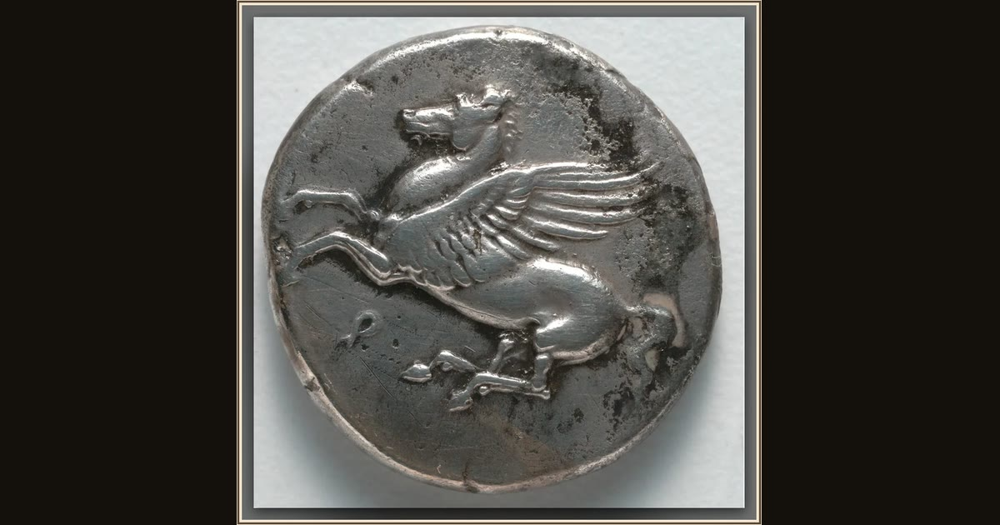

Stater: Pegasos (obverse); Head of Athena (reverse)
Greece, Corinth · c. 350–338 BCE · cma
A Corinthian silver stater bears the winged horse Pegasos; Aristotle describes stamping metal so its amount need not be weighed for each exchange (1.1257a) Explore its place in Aristotle's Politics, Book I, section 11.